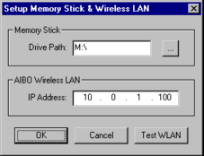
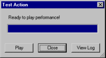
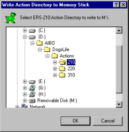
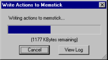
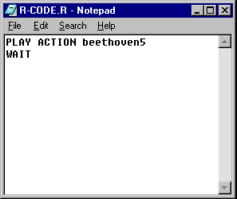

|
|
| Skitter - Chapter 10 - Test
Actions |
Contents of this website are freeware and/or copyrighted material, and may not be sold
under any circumstances.
Email: dogsbody@dogsbodynet.com
Home:
https://dogsbodynet.com
|
Table of Contents:
1.0
Introduction
2.0 Install
Skitter
3.0 Performance Files
4.0 Motion Editing
5.0 LED Editing
6.0 MIDI Sound Editing
7.0 Wave Sound Editing
8.0 The Reference Library
9.0 The AIBO Window
10.0 Test Actions on AIBO
10.1 Setup Memory Stick & Wireless
LAN
10.2 Test with WLAN
10.3 Manual Testing
11.0 Upload Actions to AIBO
12.0 Specify Preferences
|
10.0 Test Actions on AIBO
Skitter supports using the wireless LAN
(if
installed) for quick testing of actions on AIBO 210/220 &
7's. If you don't have a WLAN, or use an ERS-310, you
cannot easily test actions. Instead, see section "Manual Testing" below for testing with a memory
stick.
ERS-7 owners please note RCode-7 does not support testing of LED's
& sound -- only motion WLAN testing will work. If
anyone devises a fix for this limitation, please contact me.
Anyone planning a good number of AIBO performances should really
consider
getting a wireless LAN setup. Once working, it saves an
immense amount of time.
10.1 Setup
Memory Stick & Wireless LAN
To configure Skitter, from the
File Menu select "Setup Memstick & WLAN". Type
in the drive path to your memstick reader.
You should setup your AIBO WLAN
before attempting a connection with Skitter. Find AIBO's
four digit IP address, and type it in. Turn on AIBO,
and after "stretching", use the "Test WLAN" button (see image
right) to verify Skitter sees AIBO.
|

|
10.2 Test with WLAN
Turn on AIBO, and after
"stretching", click the toolbar "Test"
button. Skitter connects to AIBO, waits for it to
initialize, uploads the action, and is then ready to test (see image
right).
Click the dialog "Play" button to perform the skit.
You can click "Close"
at any time to abort (if the performance doesn't work properly for
example). You can play actions as many times as you like
before closing the connection.
|

|
10.3 Manual Testing
10.3.1 Writing Actions to
Memstick
People without a wireless LAN, or anyone using an ERS-310, must test
actions the hard way.
Save any open performance files. Insert
a programmable memory stick into your reader, and click the toolbar "Write"
button. If you don't have any performance files open, Skitter
prompts for the AIBO model type.
A window appears for selecting an action directory (see right).
Click OK once you make a selection.
IMPORTANT! If
the AIBO type doesn't match your AIBO, click cancel. Close all
open performances, click the toolbar "Write" button again, and then
select the correct type.
|

|
Skitter compiles the action
directory, and writes the results to your memory stick.
|
 |
10.3.2 Create Test
Program
You
have two choices. Use YART, or create a custom test
program. YART is by far easier. Start YART,
select "User Actions" category, and click-n-drag into an AIBO
event. See third tutorial for
more details.
Alternatively, create a test program in a text editor, to play the
action. Assuming skit "beethoven5", this would simply be:
PLAY ACTION beethoven5
WAIT
Save to the memory stick using the filename below (replace M: with your
memstick drive):
M:\OPEN-R\APP\PC\AMS\R-CODE.R
If the memory stick R-Code program
already uses the action, you can skip this step.
|

|
10.3.3 Test Action
Insert memory stick into AIBO, turn it on, and see how things
work!
|
|
|
Legalese: These programs are provided AS IS without any warranty, expressed or implied.
This includes without limitation the fitfulness for a particular purpose or
application. People using the software bear all risk
as to its quality and performance. The user of the software
is responsible for any damages whether direct, indirect, special,
incidental or consequential arising from a failure of these programs to operate in
any manner desired. Etc, etc...
"AIBO" is a registered trademark of Sony Corporation.
"AIBO Master Studio", "R-Code", and "Memory Stick" are trademarks of Sony Corporation.
|
|